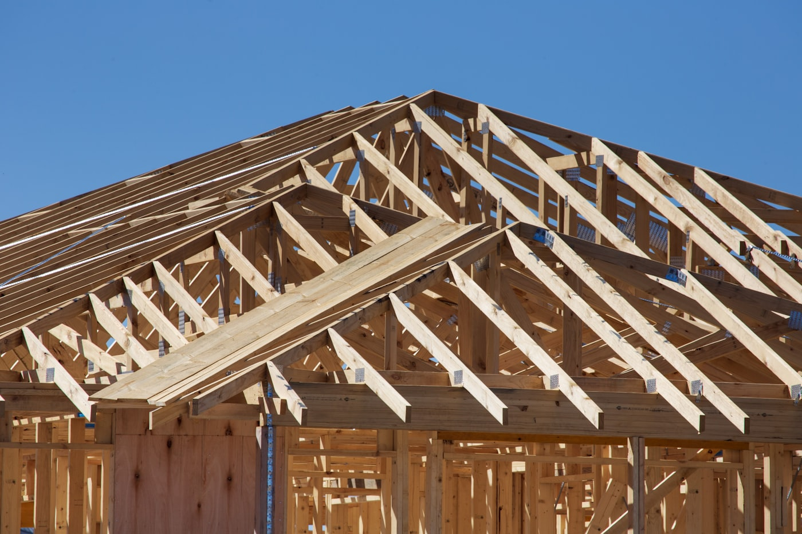
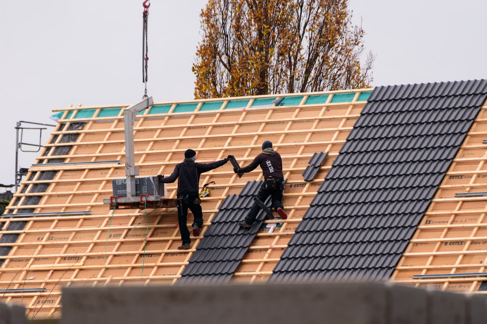
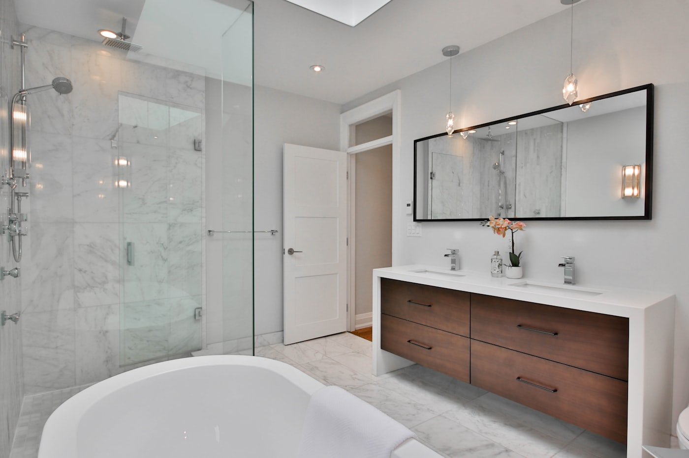
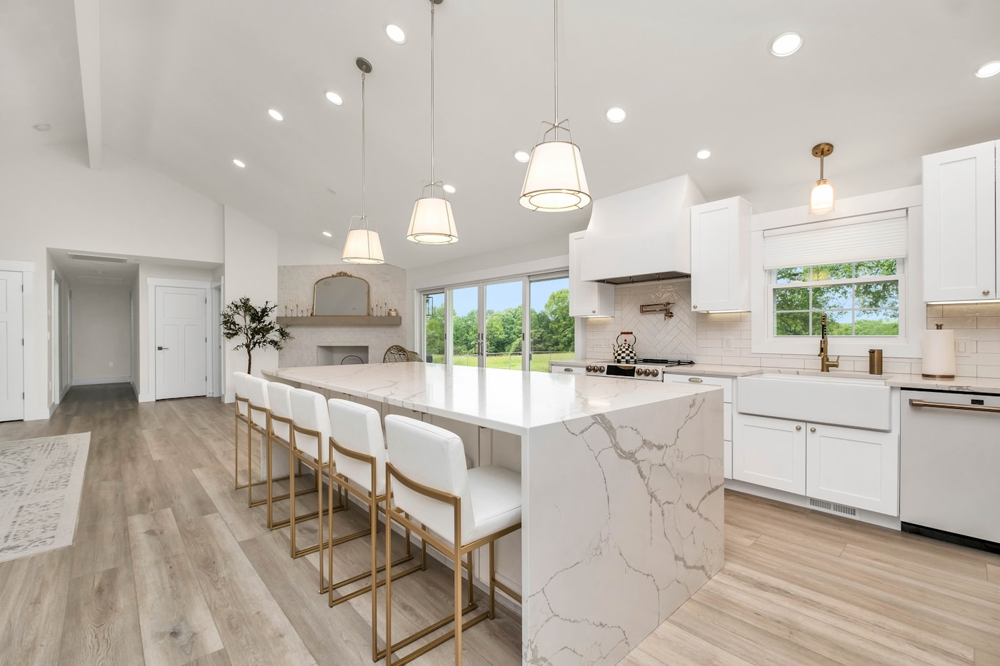
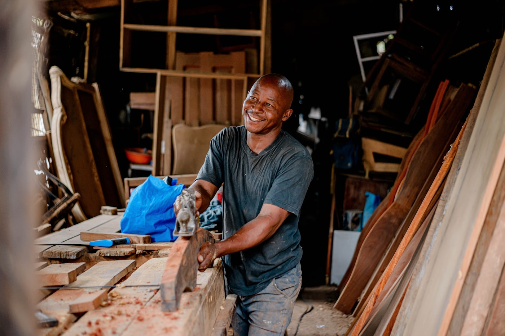
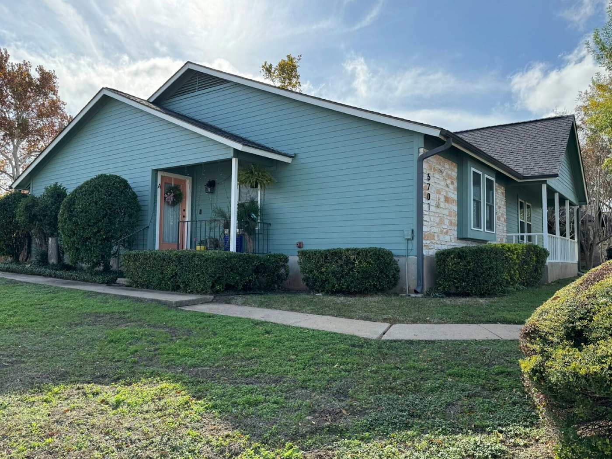

Takläggning & takomläggning
Byte av tegel-, plåt- eller papptak, taksäkerhet och tilläggsisolering – utfört av certifierade takläggare enligt branschregler.

Byggfirma på Ekerö sedan 2009
Vi hjälper villa- och fastighetsägare med allt från takbyten till kompletta badrumsrenoveringar – med F-skatt, full försäkring och skriftlig garanti på varje projekt. Boka ett kostnadsfritt platsbesök redan idag.
Vad vi gör
Byte av tegel-, plåt- eller papptak, taksäkerhet och tilläggsisolering – utfört av certifierade takläggare enligt branschregler.
Helrenovering av våtrum med våtrumscertifierat utförande (BBV/GVK) och full garanti på tätskiktet.
Uterum, altaner och tillbyggnader byggda för svenskt klimat – vi hjälper dig även med bygglovet.
Måttanpassade kök, garderober och inredningssnickerier från vår egen snickeriverkstad.
Puts, panel, tilläggsisolering och energieffektiva fönster som sänker uppvärmningen och håller över tid.
En kontakt genom hela projektet – vi håller ihop tidsplan, hantverkare och budget från skiss till besiktning.
Utvalda arbeten





Så går det till
Du hör av dig via formuläret eller telefon och beskriver kort vad du vill ha gjort.
Vi kommer ut kostnadsfritt, mäter upp och lämnar en skriftlig, specificerad offert inom några dagar.
Vi planerar tidplanen tillsammans med dig och håller dig uppdaterad under hela arbetet.
Vi går igenom resultatet tillsammans, du får garantidokument och vi finns kvar om något behöver justeras.
Om oss
Nordvik Bygg & Tak startades 2009 av snickaren Erik Nordvik. Idag är vi tolv fast anställda hantverkare med egen snickeriverkstad på Ekerö som tar hand om allt från takbyten till fullständiga renoveringar. Vi tror på fasta priser, tydlig kommunikation och att lämna varje arbetsplats städad.
Vad kunderna säger
★★★★★"Vi anlitade dem för vår badrumsrenovering och blev otroligt nöjda. Allt gick enligt tidplan och de visade oss allt tätskiktsarbete innan det kaklades."
Anna LindqvistVillaägare, Ekerö
★★★★★"Bytte hela taket förra sommaren. Tydlig offert, städat varje dag och inga överraskningar på slutfakturan."
Peter SöderbergEkerö
★★★★★"Som fastighetsägare har jag anlitat dem för flera lokalanpassningar. Alltid god kommunikation och hantverk i toppklass."
Marie HolmFastighetsbolag, Ekerö
Vanliga frågor
Nej. Vi kommer ut på ett kostnadsfritt platsbesök och du får en skriftlig, specificerad offert utan förpliktelser.
Ja, de flesta renoveringsarbeten i din bostad ger rätt till ROT-avdrag (30 % av arbetskostnaden 2026). Vi drar av det direkt på fakturan så du bara betalar din del.
En badrumsrenovering tar oftast 2–4 veckor och ett takbyte på ett normalstort villatak 3–5 arbetsdagar, beroende på omfattning och väder.
Ja, vi har F-skattsedel, fullständig ansvarsförsäkring och relevanta certifieringar för våtrum. Handlingar visar vi gärna vid platsbesöket.
Allt vi utför omfattas av 5 års garanti. Hör av dig så åtgärdar vi det utan extra kostnad inom garantitiden.
Hör av dig